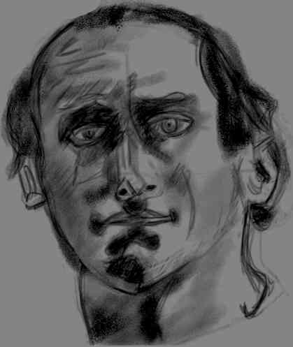
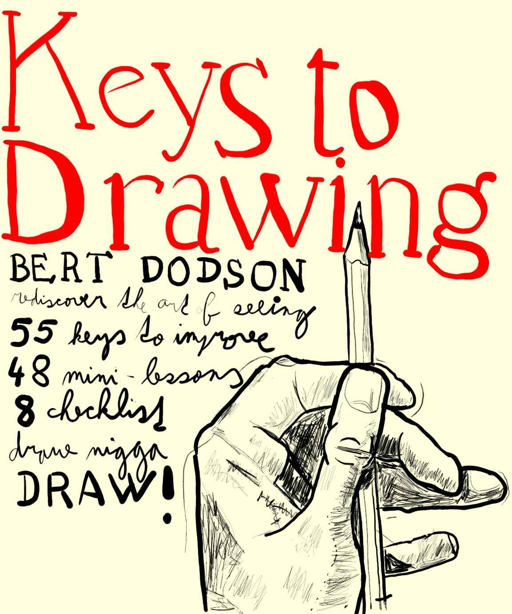
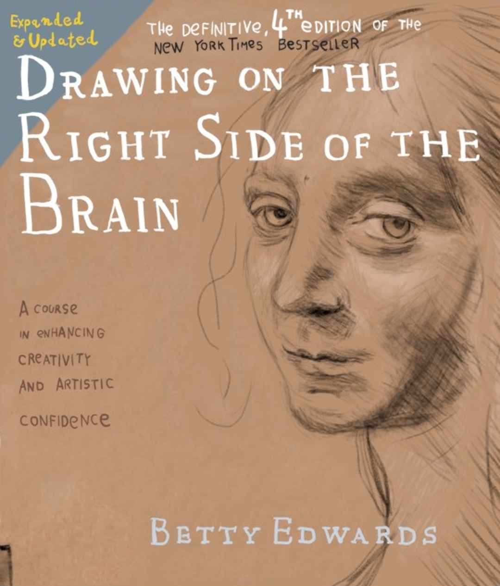
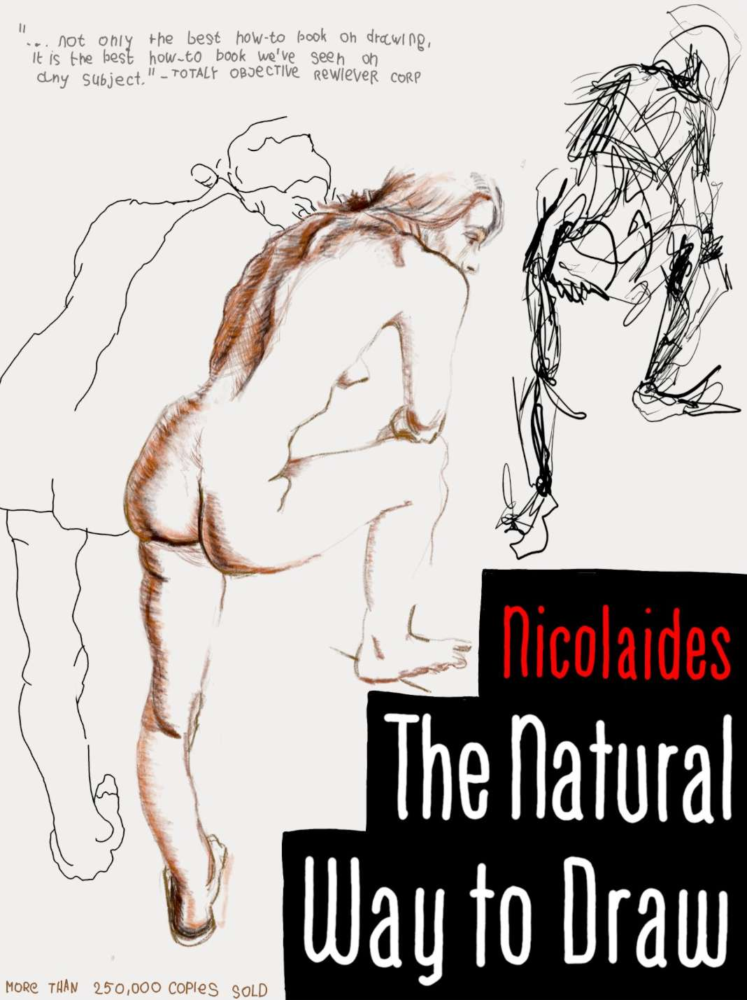
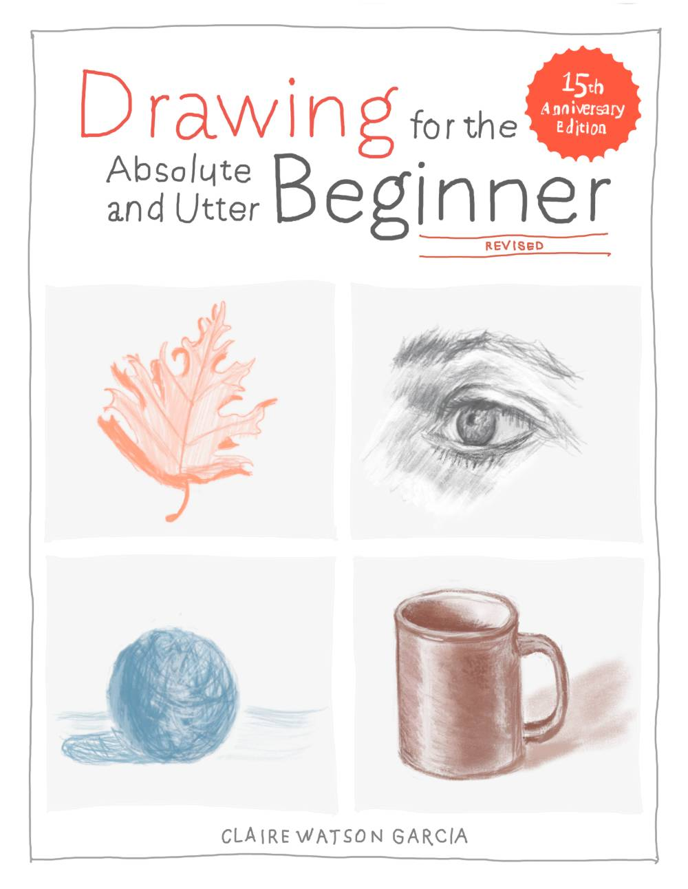
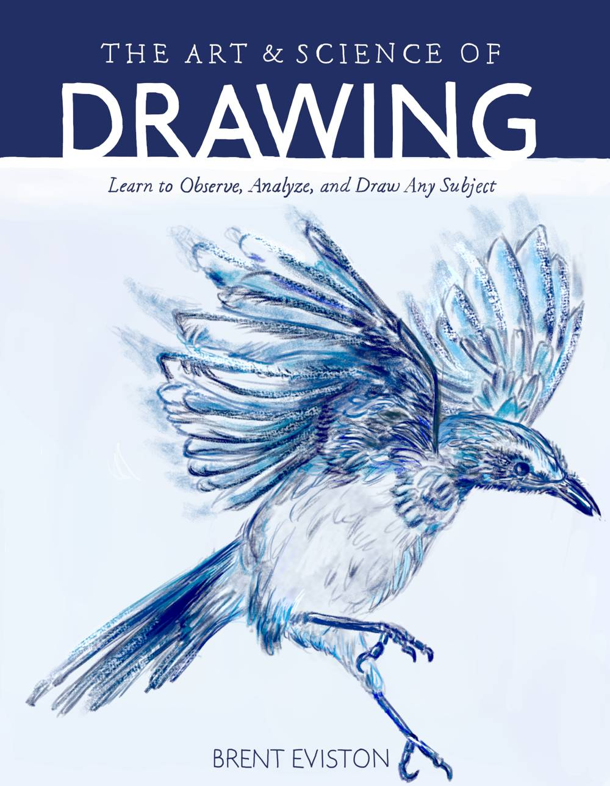
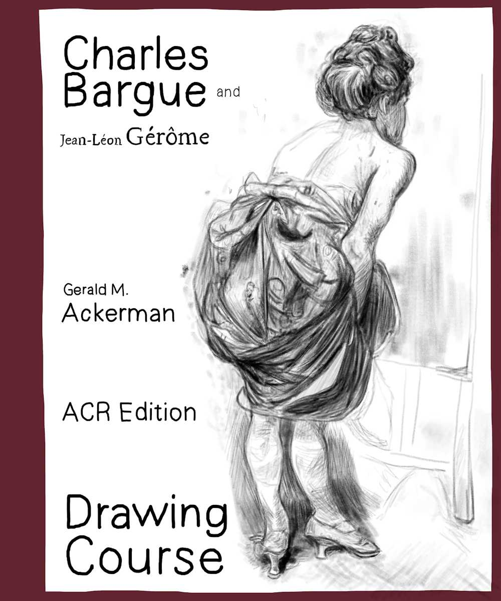

How to draw
When i started drawing first i searched internet for guidance. Naturally i found many places, websites, schools, courses and books on the subject. But unlike any other topic i was ever interested in, only in this craft have i seen so many (seemingly) contradicting advice:

And i, as beginner with no experience, had to decide who was telling the truth and who was just a crab or an uninformed internet expert. So i made a list of books and decided to go through them one by one. Surely at least one of them contains the exercises or knowledge needed to get good!
TLDR
- OBSERVATION is the most important fundamental skill you have to master first!
- You get good only by drawing A LOT. Make drawing a daily habit!
- Shy away from drawing purely from imagination at the start; ALWAYS use references!
- Pick ONE course or book and FINISH it. Don't switch them without a good reason!
- Find an art community where people aren't afraid to give you negative feedback.
- Broadcasted radio is good background music for drawing.
- Learning from great teachers might be easier and faster than from great artists.
I could have written way more, cite my favorite book or artist, but honestly, for every advice, you will be able to find counter-advice from a successful or well-acclaimed artists who will claim the direct opposite. Observation and drawing a lot. That is all there is to it. Everything else is just a bonus that can hinder or speed up your progress.
The BEG books
The list of books i completed. They are sorted chronologically as i went through them. I have read each book from start to finish, and you can easily tell if i did all the exercises + copied the drawings or if i just flew through it simply by checking the gallery.

- Bert Dodson: Keys to Drawing, 1985
- Observation, intuition, fun.
- Pencil and eraser.
- 69 studies, 3 months
- Draw what you see even if it feels wrong.
- 10/10 easily the best book for beginner. The only drawback is a somewhat steep learning curve at the start. The book covers a broad range of drawing techniques while maintaining a steady skill curve. You will mostly draw from real life or references and learn about various drawing concepts like perspective, sighting, composition, rendering, shadows or even from where you can gain inspiration. This book's power level is very high and scope very broad. Dont underestimate it!

- Betty Edwards: Drawing on the right side of the Brain, 1979
- Observation, strict instructions.
- Pencil, eraser, charcoal, viewfinder.
- 14 studies, 3 weeks
- Trick your left brain hemisphere into dropping out of the task.
- 6/10 suitable for people persuaded they don't have a talent for drawing. Elementary book covering the minimum you need to know to draw correctly from observation. Very wordy. If you won't fall asleep while reading it, you WILL LEARN how to draw! This book has undeniable results. As a bonus, you will read about the failing USA education system and your own brain.

- Kimon Nicolaïdes: The Natural Way to Draw, 1941
- Gesture, observation, intuition, grind.
- Pencil, ink, charcoal, watercolors, oil.
- 93 studies, 4 months
- Draw thousands of gestures and then draw more of them.
- 5/10 controversial experience imitating university art course. The book explicitly states you won't learn anything from it unless you follow through with the prescribed exercises and grind. I kid you not i improved just by the gesture grind. Around ~3000th gesture, it finally dawned on me. However, i cannot recommend this book to anyone unless they struggle with STIFF figures. Whatever this book teaches, it feels like you are doing it in the most inefficient way possible. But that could simply be just me. Anatomy, figure proportions, drapery, feeling the form. The book contains a lot of very interesting revelations. But the price you will pay will be MANY days of grinding gestures.

- Claire Watson Garcia:
Drawing for the Absolute and Utter Beginner, 2003
- Observation, strict instructions.
- Pencil, ink, charcoal, wash.
- 16 studies, 3 weeks
- Always be kind to your drawings and yourself.
- 7/10 short, detailed, straight to the point. Direct upgrade of book Drawing on the right side of the Brain. The strongest points of the book are VERY detailed instructions. The skill curve is very mild. Book even shows you common drawing errors and how to fix them. You will start drawing very simple household objects and you will finish with human head. You will also be introduced to new mediums and showed their strengths. Very nice book for begginers.

- Brent Eviston: The Art and Science of Drawing, 2021
- Construction, gesture, strict instructions.
- Pencil.
- 14 studies, 2 weeks
- Draw circle. Now sphere. And finally now draw apple from that sphere!
- 7/10 short, detailed, technical introduction to construction and the human figure. This book is VERY different from the others. It's as if you gave a mechanical engineer a task to produce a course on drawing. Instead of approaching the subject through observation, you are encouraged to use what you know (form, shape) about it. The book is very technical; it explains every single detail, from how to hold your pencil to how to make strokes. You start with drawing spheres and cubes, continue with fruits, and end up with a human figure. Very well written. Ideal for people who like geometry and hate unclear instructions.

- Charles Bargue: Drawing Course, 1875
- Observation, grind.
- Charcoal or pencil.
- 30 studies, 5 weeks
- Copy these pictures as best as you can, reach respectable finish!
- 3/10 catalogue of Neoclassicism. In the 19th century, if you were a student of the arts in France, you would be copying from this in the same way Picasso or Gogh did. The course is designed to be utilized in an atelier under the supervision of a tutor. The stunning images of ancient Roman sculptures are the only thing I liked. The book is written in the style of a diploma project: excellent for earning a university degree, terrible as a source of knowledge to learn from. It begins by spitting out highly condensed theory and a few helpful suggestions before unleashing an endless stream of references. The skill curve is extremely erratic. This book is useless unless you're interested in history tidbits like why women were forbidden in posing for figure studies.
The perspective books
It is impossible to draw accurately without knowing basic physical laws which dictate how objects look like depending on the distance or angle we observe them. And while many beg books covered the principles briefly, only going deep into this topic shall lead into successful illustrations of reality.
Now go and draw.
{kind=link}